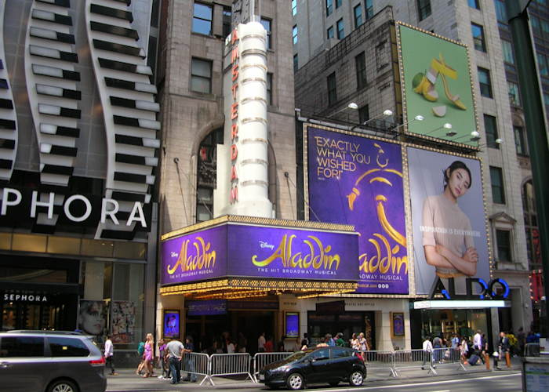

New Amsterdam Theater, New York City, USA
The New Amsterdam Theater was founded in the year 1903, and is still active today. You can go for a magical tour behind the theater and see incredible sets. This is the oldest of all the theaters in Broadway that still continues to make plays. The place was given the nickname, "The House Beautiful".
Incredible Preformances and Sets
Images
Side view of inside the theater

Outside of the theater enterance
Preforming Alladin
Reviews
- "It's Like Walking Into A Dream" -USA Today
- "We went and saw Aladdin on Broadway and I must say, we were not disappointed with the venue one bit. The show was amazing and the Amsterdam Theater was everything that you would think it would be. Primitive, historic and just an abosoluely beautiful work of art mack n the middle of downtown Manhattan! We loved it!" -Michael Lehman 5 Stars in Review
- "Beautiful theater. The lower level is a must see. A less visited area with seating and an unbelievable ceiling. Seats are comfortable and good views from everywhere. Great spot to see a show with kids. Easy to get to by train or walking." -John Cook 5 Stars in Review
Links